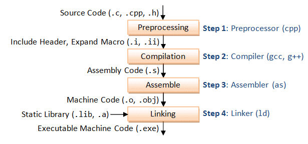
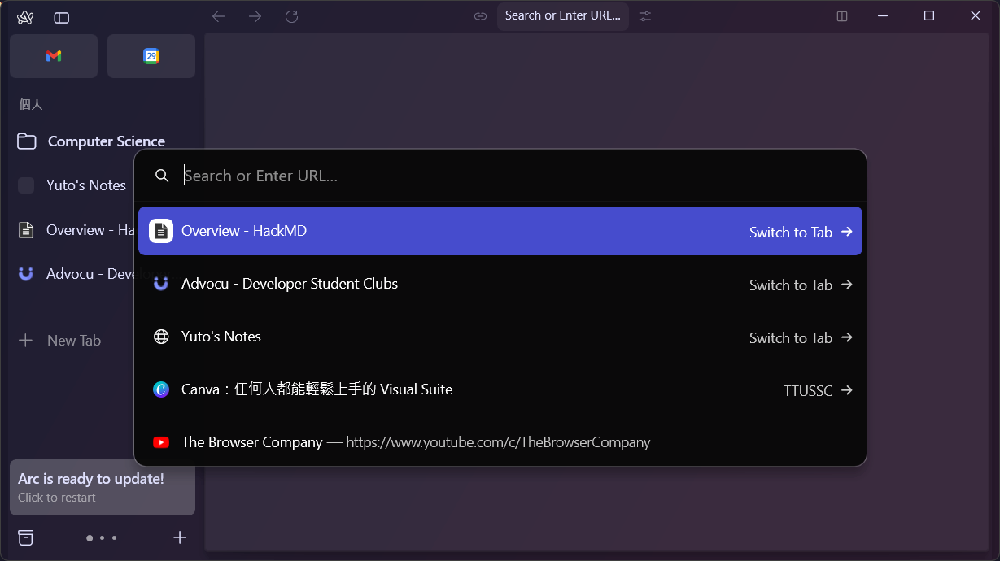
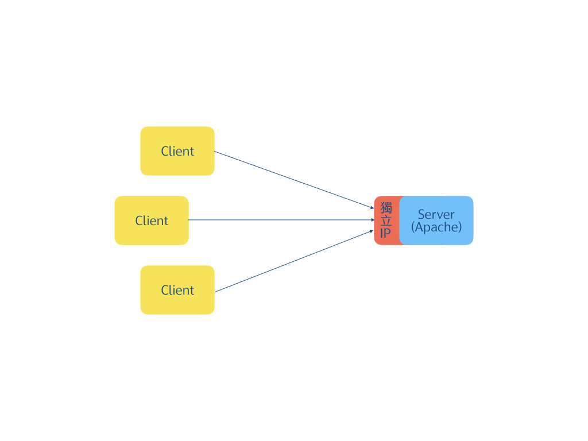
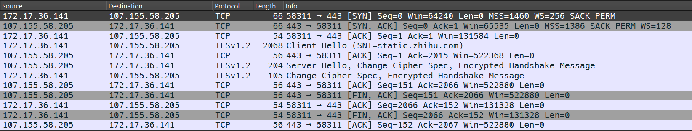
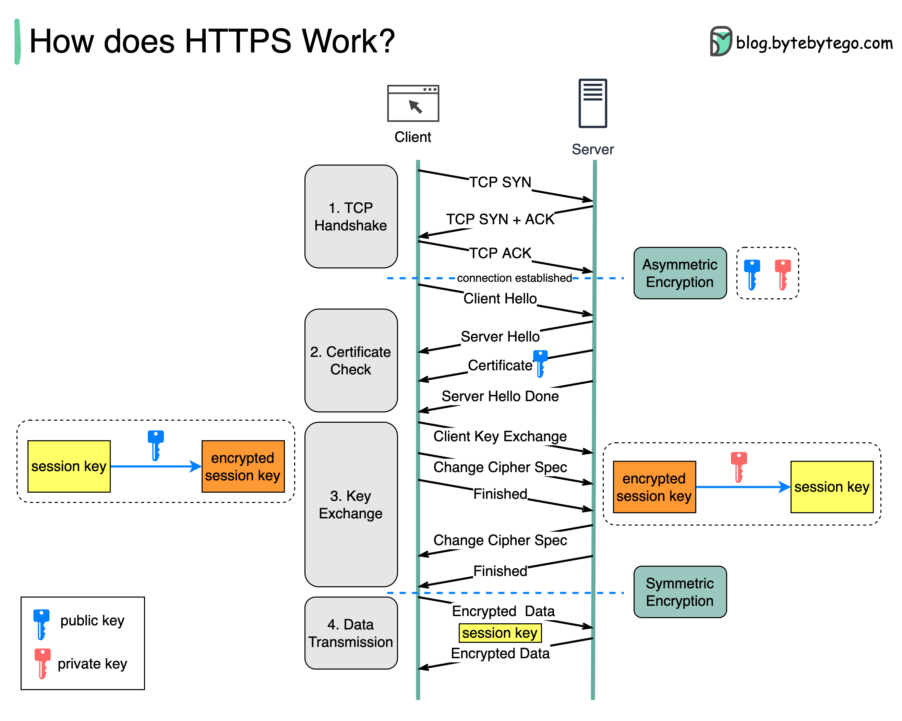

從 C 語言快速上手
Python
的基礎實戰
 GitHub: SAWARATSUKI/ServiceLogos
GitHub: SAWARATSUKI/ServiceLogos
 2022, Working with Python’s
FastAPI
2022, Working with Python’s
FastAPI
C program complie
Why Python?
$ python
Why Python?
>>> import this
The Zen of Python, by Tim Peters
Beautiful is better than ugly.
Explicit is better than implicit.
Simple is better than complex.
Complex is better than complicated.
Flat is better than nested.
Sparse is better than dense.
Readability counts.
...
Why Python?
>>> import this
The Zen of Python, by Tim Peters
優美優於醜陋。明瞭優於隱晦。
簡單優於複雜。複雜優於凌亂。
扁平優於巢狀。稀疏優於稠密。
可讀性很重要。
...
Python V.S. C
print("Hello, World.")
Python V.S. C
print("Hello, World.")
#include <stdio.h>
int main(){
printf("Hello, World.\n");
return 0;
}
Python V.S. C
l = [x for x in range(100) if x % 3 == 0 and x % 7 == 0]
Python V.S. C
l = [x for x in range(100) if x % 3 == 0 and x % 7 == 0]
int l[100] = {0};
int size = 0;
for(int i = 0;i < 100;i++){
if(i % 3 == 0 && i % 7 == 0){
size[i - 1] = i;
size++;
}
}
環境設置
建立課程目錄
$ cd ~ # 回到使用者家目錄
$ mkdir c2python # 建立 c2python 目錄
$ cd ./c2python # 切換進入目錄
Python 環境安裝
Python 官網
$ python
VS Code 環境安裝 & 設定
VS Code 官網
$ code
課程簡報與程式碼
$ cd ~
$ git clone https://github.com/yuto0226/FromC2Python.git
Python 直譯器
打開你的終端機
$ python # python3
Python 直譯器
進入Python 直譯器的介面
>>>
...
與 Python 直譯器互動
>>> 1 + 1
2
>>> x = 42
>>> x ** 2
1764
>>> x = x ** 2 + 5
>>> x
與 Python 直譯器互動
>>> 1 + 1
2
>>> x = 42
>>> x ** 2
1764
>>> x = x ** 2 + 5
>>> x
1769
>>>
稽古 Practice
import math
>>> r = 18
稽古 Practice
計算 \( r^2 \times \pi \)Hint: \( \pi \) = math.pi
稽古 Practice
>>> r = 18
>>> r ** 2 * math.pi
1017.8760197630929
稽古 Practice
>>> Yuto = True
>>> handsome = True
稽古 Practice
>>> Yuto = True
>>> handsome = True
>>> if Yuto is handsome:
... print("Yuto is handsome.")
... else:
... print("Yuto is ugly.")
...
稽古 Practice
>>> Yuto = True
>>> handsome = True
>>> if Yuto is handsome:
... print("Yuto is handsome.")
... else:
... print("Yuto is ugly.")
...
Yuto is handsome.
退出 Python 直譯器
>>> ^Z # Crtl+z或quit()輸入 Ctrl + Z （=EOF）或 quit() 退出 Python 直譯器
輸入/輸出
建立 io.py 檔案
$ cd ~/c2python/
$ code io.py
VS code
# io.py
x = input("請輸入 x: ")
print(x)
Shell
$ python io.py
請輸入 x: 123
123
input(prompt)
如果有傳入 prompt參數則會在 sys.stdout 印出 prompt（不換行）
input() 會從 sys.stdin 讀取一行轉換成字串
print(*objects, sep=' ', end='\n', file=None, flush=False)Print objects to the text stream file, separated by sep and followed by end. sep, end, file, and flush, if present, must be given as keyword arguments.
print(*objects, sep=' ', end='\n', file=None, flush=False)- *objects：要印出去的東西
- sep：object 印出時用 sep 分開
- end：結尾印出 end
- file：要印出去的地方，預設是 sys.stdout
- flush：是否清出輸出緩存
稽古 Practice
寫一個程式，會從終端機輸入一個字串，請將字串用 print() 印出。
"Hello," 會做為第一個參數，第二個參數則是輸入的字串。
最終的結果將是 "Hello, <輸入的字串>!"。
註解
# 註解會打在 # 的後面
# Python 沒有多行註解
print() # 這行會印出一個 '\n'
變數
儲存資料的容器
- int, float
- bool
- list, str
- dict
變數
# 宣告變數時不用指定型別
# 一個變數可以裝不同型別的資料
num, flt = 31, 4.2
num = "TTUSSC"
flt = [1, 1, 2, 3, 5, 8, 13] # 費氏數列
變數
型別轉換
# 型別(轉換的目標)
data = "2024"
print(type(data), data)
data = int(data)
print(type(data), data)
變數
型別轉換
# 型別(轉換的目標)
data = "2024"
print(type(data), data)
# <class 'str'> 2024
data = int(data)
print(type(data), data)
# <class 'int'> 2024
變數
總結來講，Python 變數就是
- 儲存資料的容器
- 可以裝不同型別的資料
- 可以單行多重賦值
List & String
串列 & 字串
可以把它視為自由調整大小的陣列，同時還可以裝不同類型的資料。
List & String
list 會用中括號把元素包起來，元素之間用 , 分隔
l = [1, 1, 2, 3, 5, 8, 13]
l = ["莛宥", 180, 65.2, [123, "威翰"]]
print(l[0][0]) # '莛'
print(l[2]) # 65.2
print(l[-1]) # [123, "威翰"]
List & String
list 的操作
a = [1, 3, 5, 7, 9]
b = [2, 4, 6, 8, 10]
print(a + b) # [1, 3, 5, 7, 9, 2, 4, 6, 8, 10]
a.append(2**3)
print(a) # [1, 3, 5, 7, 9, 8]
List & String
字串和 C 一樣，用雙引號包住
0 1 2 3 4 5
+---+---+---+---+---+---+
| P | y | t | h | o | n |
+---+---+---+---+---+---+
-6 -5 -4 -3 -2 -1
l = "Python"List & String
Python 合法的字串形式
print('spam eggs') # spam eggs
print("Paris rabbit!") # Paris rabbit!
print("""\
Usage: thingy [OPTIONS]
-h Display this usage message
-H hostname Hostname to connect to
""")
# Usage: thingy [OPTIONS]
# -h Display this usage message
# -H hostname Hostname to connect to
List & String
str 的操作
first = "Elon"
last = "Ma"
print(first + " " + last) # Elon Ma
pritn(last * 3) # MaMaMa
List & String
list 的切分
>>> # l[開始:結尾:間隔]
>>> l = "Python"
>>> l[1:5]
'ytho'
0 1 2 3 4 5
+---+---+---+---+---+---+
| P | y | t | h | o | n |
+---+---+---+---+---+---+
^ ^
|---- 這中間 ----|
List & String
list 的切分
# l[開始:結尾:間隔]
a = [0, 1, 2, 3, 4, 5, 6, 7, 8]
print(a[2:7]) # [2, 3, 4, 5, 6]
print(a[::2]) # [0, 2, 4, 6, 8]
print(a[::-1]) # [8, 7, 6, 5, 4, 3, 2, 1, 0]
稽古 Practice
撰寫一個程式，會輸入一個字串(len > 3)。分別將字串進行操作，
- 倒著印出來
- 跳一格印出
- 字串切最前面兩個字元
字串切最後三個字元
ex. "stanley"
yelnats
saly
st
ley
數學運算
- +：加法
- -：減法
- *：乘法
- /：除法（浮點數）
- %：取餘數
- **：指數
- //：整數除法（int）
稽古 Practice
撰寫一個 BMI 計算機(bmi.py)，會有兩行輸入：身高(cm)、體重(KG)，
輸出 BMI 值。
請輸入身高：167
請輸入體重：51
BMI 是：18.286779733945284
Extra：小數點取兩位可以怎麼做？
流程控制
if 條件:
# do something
elif 條件:
# do something
else:
#do something
if(條件){
// do something
}else if(條件){
// do something
}else{
// do something
}
稽古 Practice
撰寫一個程式，解出 \( ax^2 + bx + c = 0 \) 的解。
有三個輸入 a, b, c，
若兩個根不同印出 "Two different roots x1=?? , x2=??"，
若兩同根則印出 "Two same roots x=??"，
若無實數解則印出 "No real root"。
Hello, World
$ cd ~/RromC2Python/example
$ python ./hello.py
Hello, World
$ cd ~/RromC2Python/example
$ python ./hello.py
Hello, World
Hello, World
$ python ./hello.py <自己的名字>
Hello, World
$ python ./hello.py 自己的名字
Hello, 自己的名字
Hello, World
# hello_python.py
import sys
def main(argv):
if len(argv) > 1:
print(f"Hello, {argv[1]}")
else:
print("Hello, World")
if __name__ == "__main__":
main(sys.argv)
# hello_python.py
import sys
def main(argv):
if len(argv) > 1:
print(f"Hello, {argv[1]}")
else:
print("Hello, World")
if __name__ == "__main__":
main(sys.argv)
// hello_python.c
#include <stdio.h>
int main(int argc, char* argv[]){
printf("Hello, %s", argc > 1 ? argv[0] : "World");
return 0;
}
__main__ --- 頂層程式碼環境
# hello_python.py
import sys
def main(argv):
if len(argv) > 1:
print(f"Hello, {argv[1]}")
else:
print("Hello, World")
if __name__ == "__main__":
main(sys.argv)
// hello_python.c
#include <stdio.h>
int main(int argc, char* argv[]){
printf("Hello, %s", argc > 1 ? argv[0] : "World");
return 0;
}
__main__ --- 頂層程式碼環境
while
while 條件:
# do something
稽古 Practice
撰寫一個程式，計算(((1+1)*2+1)*2+1)...，直到數字是71的倍數為止。
判斷其值是否為三的倍數。
for
for 元素 in 串列:
# do something
for
for 元素 in 串列:
# do something
group = ["Stanley", "York", "Wayne", "Ruby"]
for people in group:
print(people)
for
for 元素 in 串列:
# do something
group = ["Stanley", "York", "Wayne", "Ruby"]
for people in group:
print(people)
string str = "Allen";
for(char ch:str){
std::cout >> ch;
}
range()
range(開始,結束,間隔)
>>> list(range(1,5))
[1, 2, 3, 4]
for + range() 組合技
for i in range(5):
print(i)
for(int i = 0;i < 5; i++){
printf("%d\n",i);
}
稽古 Practice
撰寫一個程式，輸入一個數字 n 計算 1 + 2 + 3 + ... + n，
以及 n!
a005. Eva 的回家作業
break, continue, pass
- break：終止最內部的 for 或 while 迴圈
- continue：直接跳到迴圈的下一圈
- pass：它不會執行任何動作，可以用在需要陳述式且不需執行動作的時候
break, continue, pass
while True:
x = input()
if x == '':
break
print(x)
輸入任意字串直到輸入空字串為止
break, continue, pass
for i in range(100):
if i % 13 == 0:
continue
print(i)
跳過印出13的倍數的值
break, continue, pass
for i in range(1000000):
pass
1000000 次的空迴圈
字典 dict
- key：資料的鍵/鑰匙
- value：資料的內容

hash table
字典 dict
d = {鍵:資料}
print(d[鍵]) # 資料
d[鍵] = 新資料
d[新鍵] = 資料 # 新增資料
字典 dict
grade = {
"discrete":56, "java":95,
"android":100, "english":78
}
print(grade["discrete"]) # 56
print("java" in grade) # True
print("english" not in grade) # False
字典 dict
print(list(grade))
# ['discrete', 'java', 'android', 'english']
print(list(grade.values()))
# [56, 95, 100, 78]
grade["news_eng"] = 66
print(grade)
# {
# 'discrete': 56, 'java': 95,
# 'android': 100, 'english': 78, 'news_eng': 66
# }
字典 dict
del grade["english"]
print(grade)
# {
# 'discrete': 56, 'java': 95,
# 'android': 100, 'news_eng': 66
# }
稽古 Practice
撰寫一個字典程式可以自由的新增單字以及修改單字。
輸入 a 新增/修改單字，
輸入 l 印出目標單字，若無資料則印出"查無單字"，
輸入 p 印出所有單字，
輸入 q 退出
稽古 Practice
a
請輸入單字：array
請輸入中文：陣列
l
請輸入單字：array
陣列
p
...
q
函式 function
def 函式名稱(參數):
[return 回傳值]
函式 function
def 函式名稱(參數):
[return 回傳值]
def 函式名稱(參數: 參數型別)->回傳值型別:
[return 回傳值]
稽古 Practice
撰寫一個函式 mid() 會接收一個沒有排序的 list，
回傳這組 list 的中位數的值。
網際網路 & 爬蟲
WWW
Server-Client
關於後端觀念(一)-什麼是client-server架構?
HTTP Request

URL
https://
yuto0226
.
github
.
io
/
FromC2Python
/
slide.html #Internet ?topic=網際網路and爬蟲&content=url
RFC 意見徵求搞
IP 網際網路協定
$ ipconfig
TCP

TCP
- SYN(Synchronization)：建立連線
- ACK(Acknowledgement)：確認有收到封包
- FIN(Finish)：終止連接
TCP

TCP
我(client)：172.17.36.141伺服器(server)：107.155.58.205 
HTTP
HTTP request
GET / HTTP/1.1\r\n
Host: i4010.isrcttu.net:9996\r\n
\r\n
HTTP
HTTP responce
HTTP/1.1 200 OK\r\n
Server: nginx/1.24.0\r\n
Date: Thu, 09 May 2024 03:26:19 GMT\r\n
Content-Type: text/html; charset=UTF-8\r\n
Transfer-Encoding: chunked\r\n
Connection: keep-alive\r\n
\r\n
HTTPS
Requests: HTTP for Humans™
Requests is an elegant and simple HTTP library for Python, built for human beings.
安裝 Requests 函式庫
$ pip install requests
送出 HTTP 請求
import requests
url = "i4010.isrcttu.net"
r = requests.get(url)
print(r)
print(r.head)
送出 HTTP 請求
print(r.text)
Beautiful Soup
Beautiful Soup is a Python library for pulling data out of HTML and XML files.
安裝 Beautiful Soup 4 函式庫
$ pip install beautifulsoup4
PTT 美食版
root = "https://www.ptt.cc"
q = "/bbs/Food/index.html"
import requests
r = requests.get(root + q)
print("responce:", r)
from bs4 import BeautifulSoup
soup = BeautifulSoup(r.text, "html.parser")
titles = soup.find_all("div", class_="title")
for line in titles:
print(line.a.get_text())
print(root + line.a["href"])
密碼學 cryptography
稽古 Practice
類別 class
稽古 Practice
稽古 Practice